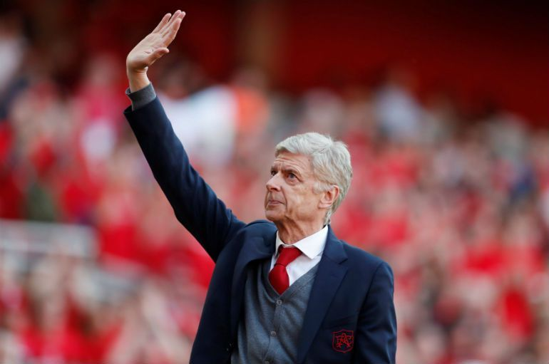
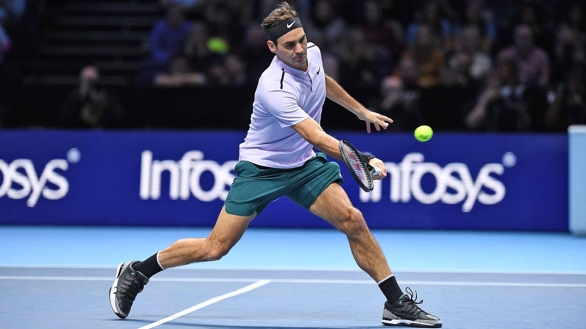

NOVI PAZAR
Možete nas naći na:


Naši sportovi i sportisti
Dženanov omiljeni sport
Odrastajući u porodici gde se fudbalu daje prevelika važnost nije teško pretpostaviti
da je moj omiljeni sport fudbal.
Pored fudbala, pratim još i košarku, tenis i rukomet. Još dok sam bio dete sa braćom
odabirajući svako svoj tim i svog fudbalera ja sam ostao bez izbora, jer je Zidan i Real Madrid
bio zauzet (moj brat ih je zazuzeo) i pošujući pravilo da ne smemo imati istog fudbalera ili tim, odlučio sam se obratiti ocu i on mi je rekao
da "uzmem" Anrija, odnosno Arsenal FC. Tih godina je Engleska Premijer Liga bivala sve popularnija u svetu,
a fudbalski klub Arsenal uz njihovog najboljeg fudbalera Anrija (Thierry Henry) postao najjači klub u ligi,
pored velike konkurencije u vidu Manchester United-a (2002).
Iako u tom vremenu nama kao deci su bili najzanimljiviji detalji fudbala, zapravo fudbalske sličice
i igranje "tupke-tapke". Kroz nekoliko godina meni je i dalje ostala draga "crvena boja" Arsenala, kao i svi fudbaleri
tog kluba i počevši pratiti fudbal intenzivnije javila se prava ljubav prema tom klubu.
Shvatanjem pravih vrednosti kluba i čoveka koji je najzaslužniji za Arsenalov uspeh
krajem 20. veka i početak 21. veka samo sam još više zavoleo Arsenal.
Čovek kojeg sam pomenuo je fudbalski stručnjak iz Francuske, gospodin koji je svoju fudbalsku trenersku karijeru
počeo u Francuskoj, i čudnim putem (preko Japana) stigao u Arsenal (1996), što je i godina mog rođenja.
Najveće uspehe u Arsenalu je postigao krajem devedesetih i početkom novog veka.
Razlog njegovog "manjeg" uspeha u novijoj istoriji, je pojavljivanje klubova sa novim ambicioznim vlasnicima
koji su bili spremni uložiti veliki novac u klub, za razliku od Arsenalovih vlasnika.
Međutim, Mr. Arsene Wenger nije odstupao od svoje politike vođenja kluba,
koja se zasniva na pravljenju talenata, a ne na kupovini "gotovih" fudbalera.
Još jedan razlog zbog kojeg Arsenal nije bio uspešan jeste pravljenje novog stadiona, što je predstavljalo veliki trošak
za klub, i samim tim budžet Arsenala je bio u velikoj meri ograničen.
U svim tim problemima i preprekama Arsen je uspeo sve te godine ostati u vrhu Engleskog fudbala.
Danas, Arsenal vodi španski stručnjak Unai Emeri i cela uprava zajedno sa njim ima dugoročni plan vođenja kluba.
Gospodin Arsen ostaje u srcima svih Arsenalovih navijača, i ostaje upisan kao najuspešniji trener
Arsenala, koji je otišao posle 22 godine i ostaće upamćen sa 3 osvojene Premijer Lige, 7 osvojenih FA Cup-ova i 7 Community Shields, od kojih vredi izdvojiti "zlatnu"
Premijer Ligu (cela sezona bez poraza), što nije uspeo nijedan trener u novijoj istoriji.
Dakle, omiljeni sporstista mi je Thierry Henry, dok omiljena osoba u svetu sporta zauvek ostaje Mr. Arsene Wenger.
Na slici ispod se nalazi Arsen Venger u veoma emotivnim trenucima, oproštajnom meču na domaćem terenu (Emirates Stadium):
arsenal.com

Selmin omiljeni sport
Kao mala nisam volela fudbal, jer se previše pažnje posvećivalo fudbalu.
Pre svega, moj otac i brat su u svakom slobodnom trenutku gledali fudbalske utakmice što je meni
bilo dosadno, ali to ne znači da ja ne volim nijedan sport, već naprotiv uživala sam gledajući tenis.
Dakle, moj omiljeni sport je tenis, a omiljeni sportista Roger Federer.
U trenucima dominacije Rodžera Federera užiavala sam u njegovim mečevima i radovala se njegovim uspesima.
Nisam pratila tenis kada je Rodžer u mladim danima bio na viskom usponu, ali sam itekako gledala najbolji
njegov tenis i uz moje roditelje navijala za njega svim srcem.
U godinama kada se pojavio njegov najveći rival, Rafael Nadal, Rodžer je samo pokazivao
bolja i bolja izdanja i ceo svet je imao prilike da gleda najbolji tenis u istoriji ovog sporta.
Svake godine Nadal je bio sve bliži i bliži Rodžeru, ja sam to loše podnosila,
da bilo ko bude "bolji" od Federera. Međutim, tih godina su se smenjivali Federer i Nadal na prvom mestu
ATP liste, i tih godina tenis je stvarno uzdignut na najveći nivo.
To nije bilo sve, na svetskom nivou se brzo uzdigao i naš najbolji teniser Novak Đoković, koji se
munjevitom brzinom izjednačio sa Rodžerom i Rafom. Tih nekoliko godina su trojica ljudi dominirali tenisom i
svaki veći turnir je bio rezervisan nekom od njih.
Slede godine Novakove dominacije, ali u svim tim usponima i padovima Rodžera Federera, Švajcarac nije poklekao,
već ga je to činilo samo jačim.
Danas, Federer ima 37 godina i dalje se nalazi u vrhu tenisa. Postavio je brojne rekorde u svetu tenisa,
a što se tiče njegovih trofeja osvojio je 98 turnira, od kojih 20 Grand Slam titula, što ga čini najuspešnijim teniserom svih vremena.
Federer u "akciji" na Masters turniru u Londonu (2016):
rogerfederer.com

Vrati na vrh